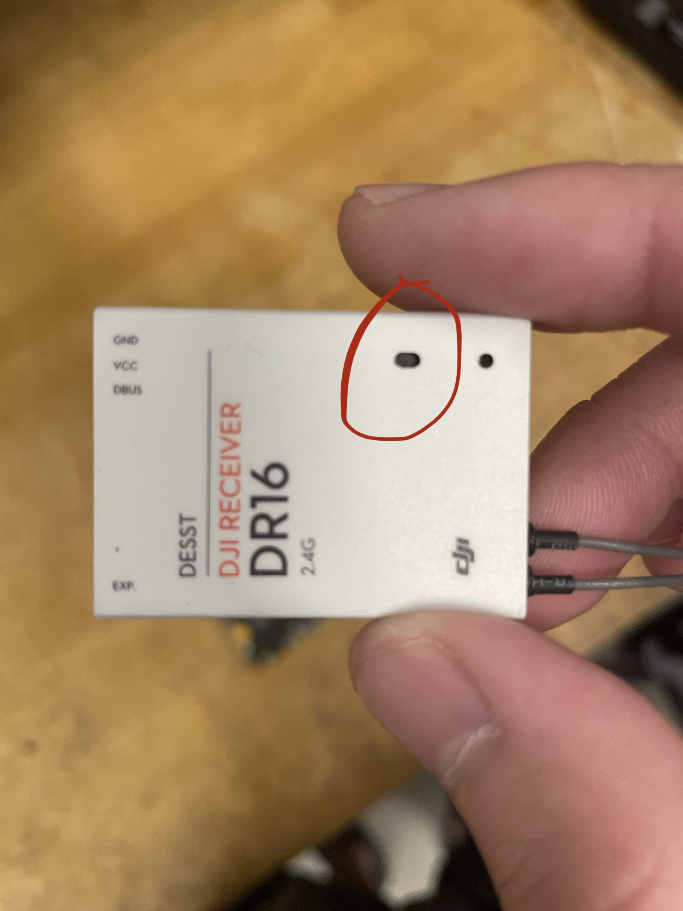

HOME
BACK
Step 1
Getting the remote set up is actually pretty easy. You just need to connect your board
to the remote DR16 reciever, like shown in the photo, and connect your board to power.
IMPORTANT: your reciever will NOT connect unless your board is connected to a battery
or power supply. This means that plugging in your 3 volt ST-Link will not work.

Step 2
Next, turn on your actual remote. There should be a box of these drone controllers
in our shelves in the KIC. Once your remote is on, your reciever should start to
either blink green or just have a solid green LED. If it's solid, congratulations,
your remote is now connected! If it's blinking, you'll just have to take a small
pin and push it down into the hole on the reciever as shown below. Hold it down
until the LED starts blinking red. Then release, and wait as the LED turns solid
green! If your LED is still red, bring the remote closer, or make sure your remote
is charged and your board is plugged into a proper power source.

Step 3
Time to write your first remote code! Click here for
some code to start you off with! Go ahead and copy/paste it into your main.cpp file, and play around with it. If all goes well,
running this code should make the "A" LED spin when you flip the left switch up!